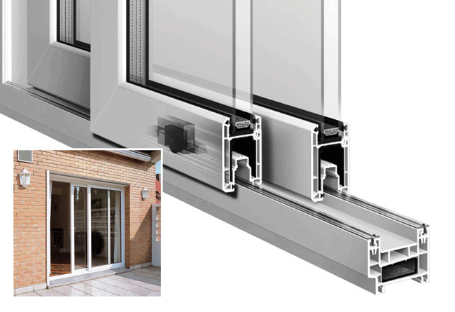

Sliding Patio Doors

Designed for maximum security and available in a wide range of styles, you are sure to find a door that will enhance your property and provide you with complete peace of mind. We have developed a selection of doors, in various colours, through to a natural wood-look with all the 21st Century benefits of a low maintenance, high durability PVC-u door. Every door we supply is bespoke and designed to your specific requirements.